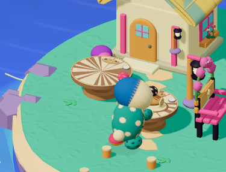
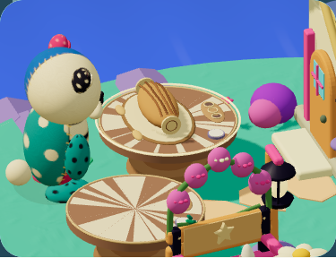
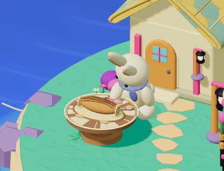
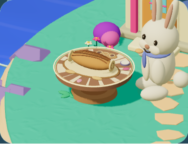
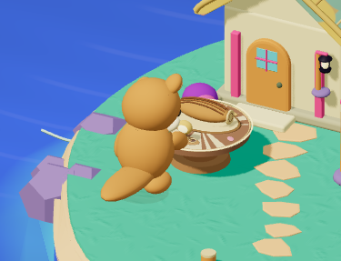
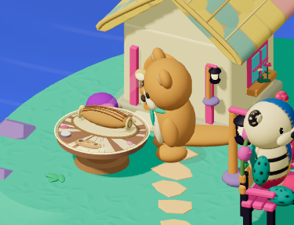
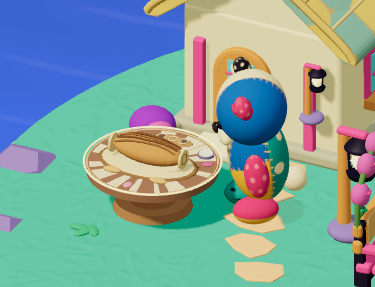
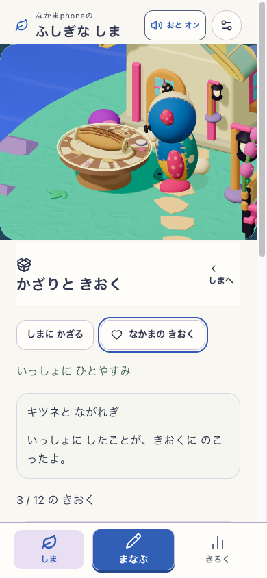

点の接触は実測で成立。身体の奥の手は静止画で読みにくい。
原PNG・SHA eb78b3fde3fac706…
同じながれぎを別の台へ運び、手を離して保存。
原PNG・SHA 98142d369404f082…
本人が台を手前へ2回動かした後、同じウサギが接触。
原PNG・SHA 52746f296fca79c3…
3つの異なる花の配置、保存、お返しまで実行。
原PNG・SHA 4b30ed9b0ff22b28…
本人が台を奥へ2回・半回転させた後、同じキツネが接触。
原PNG・SHA 6bffefc8eb0bda16…
光源・表面・受け面は実測成立。影は通常の台模様と区別しにくい。
原PNG・SHA 2737f4c261bd4942…
向きを元へ戻し、実保存した運搬記憶を明示再訪。全17store不変。
原PNG・SHA dd1da588538a99fa…
実ブラウザ画面。今回はまなぶボタンの先の回答は実行していない。
原PNG・SHA 73478ea25371d9b8…